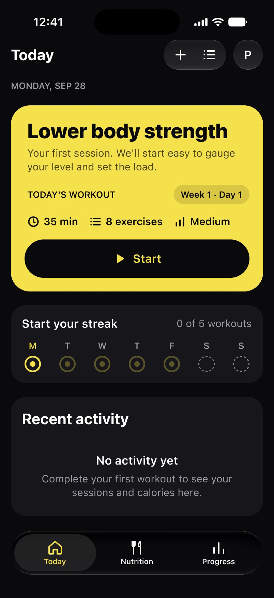
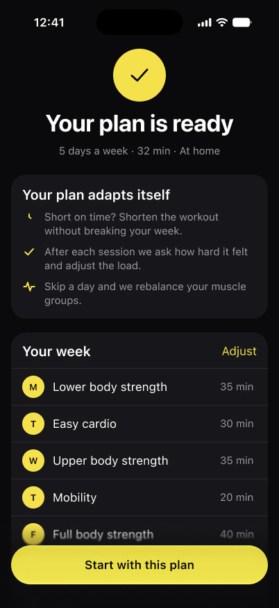
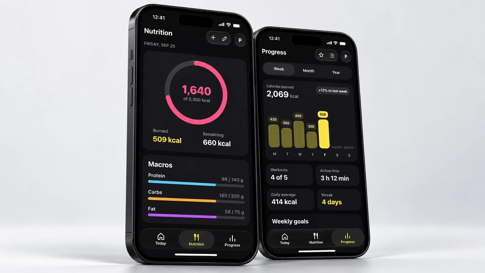

Coach
Un compañero de fitness que se adapta: entrenamiento, nutrición y progreso.
Coach ayuda a saber qué toca hoy, a ajustar el entreno al tiempo disponible y a llevar entrenamiento y nutrición en una sola experiencia sencilla.

El proyecto
Volver a un proyecto antiguo.
Coach nació como un proyecto académico de UX/UI centrado en planificar entrenos, contar calorías y seguir el progreso.
Lo he revisado para simplificar su estructura, aclarar sus prioridades y reconstruir la experiencia en torno a una idea: el plan de entreno debe adaptarse a la vida real, y no al revés.


El problema
Demasiado producto, poco foco.
El concepto original intentaba resolver a la vez entrenamiento, nutrición, funciones sociales, seguimiento del progreso y comunidad.
El rediseño centra Coach en tres necesidades que se repiten: saber qué entrenar, llevar la alimentación al día y entender el progreso.
EntrenamientoNutriciónSocialProgresoComunidad
La investigación ya señalaba lo esencial.
- Entrenamiento
Rutinas claras y guía.
- Nutrición
Un registro diario sencillo.
- Progreso
Señales visibles de mejora.
Los test de usabilidad del proyecto original también mostraron fricción al registrar comidas, una de las partes que el rediseño simplifica.
Foco de producto
Entrena. Come. Progresa.
El rediseño reduce la experiencia a tres áreas que acompañan la rutina diaria del usuario.
- Hoy
¿Qué hago hoy?
- Nutrición
¿Cómo voy hoy?
- Progreso
¿Cómo va mi semana?

Onboarding
Un plan construido alrededor del usuario.
En lugar de elegir entre programas genéricos, Coach crea el plan inicial a partir de unos pocos datos prácticos: experiencia, objetivo, disponibilidad, lugar de entreno y material.
-
01 · Experiencia

-
02 · Objetivo

-
03 · Disponibilidad

-
04 · Lugar


Apple Health puede aportar más contexto, pero es opcional.

El plan es solo el punto de partida.
Coach genera la primera semana de entreno, pero el plan está pensado para cambiar con la agenda y las respuestas del usuario.
- Menos tiempo
- La sesión se acorta.
- Más esfuerzo
- La carga se puede ajustar.
- Día perdido
- La semana se reorganiza.

Hoy
Una respuesta clara: ¿qué hago hoy?
La pantalla principal da prioridad al próximo entreno en lugar de enseñar todas las métricas a la vez.
El usuario ve al momento la sesión, la duración, la intensidad y por qué Coach la ha elegido.
- 32 min
- 8 ejercicios
- Media intensidad
«Adaptado a tu semana: ayer hiciste 45 min de bici, así que hoy descansan las piernas.»
Resumen del entreno
El entreno se adapta al tiempo disponible.
Un plan de 45 minutos no sirve si el usuario solo tiene 20. Antes de empezar, la sesión se puede acortar o alargar sin perder el foco del entreno.
203245min
No poder hacer el entreno perfecto no debería significar quedarse sin entrenar.

Entreno en curso
Menos interfaz cuando más importa la atención.
Durante el entreno, Coach reduce la interfaz a lo que necesita el ejercicio actual: series, repeticiones, carga y lo que viene después.

- Serie02
- Repeticiones10
- Peso9 kg
- AcciónSet done

El plan aprende de cada sesión.
Al terminar, el usuario valora cómo le ha ido la sesión. Esa respuesta pasa a formar parte del contexto con el que se ajustan los siguientes entrenos.


Nutrición
Nutrición sin convertir Coach en una base de datos de calorías.
La nutrición sigue siendo una parte central de Coach, pero el rediseño se centra en lo que el usuario consulta más a menudo: calorías del día, macros y comidas.
1.640 / 2.300 kcal
- Proteína
- Hidratos
- Grasa
- Comidas
Registro de comidas
Menos fricción al registrar comidas.
Registrar comidas fue uno de los flujos menos intuitivos en el test de usabilidad original. La nueva experiencia reduce las decisiones necesarias para añadir algo rápido.
Buscar→Alimento→Cantidad→Añadir


El escáner de código de barras es la vía rápida para los productos envasados, y los recientes y guardados evitan repetir búsquedas.

Progreso
Una vista semanal del esfuerzo y la constancia.
Progreso reúne la semana de un vistazo: calorías quemadas, entrenos completados, tiempo activo, media diaria y racha.
- Calorías quemadas
- Entrenos completados
- Tiempo activo
- Media diaria
- Racha de entreno

Sistema de diseño
Pensado para concentrarse.
El sistema visual usa una paleta oscura y contenida, con el amarillo reservado para acción, selección y progreso.
La nutrición añade color solo donde ayuda a distinguir métricas concretas.
- Fondo#0B0B0D
- Superficie#17161B
- Acción#F5E14C
- Calorías consumidas#FF5580
- Proteína#5BC6FA
- Hidratos#FEB544
- Grasa#BF5BF3


2024 → 2026
Antes / después.
Revisar Coach no consistió tanto en añadir funciones como en decidir qué merecía atención.
El rediseño dio al producto una jerarquía más clara, un sistema visual más sólido y una experiencia diaria más centrada.

Coach
Entrenar alrededor de la vida real.

Playground →